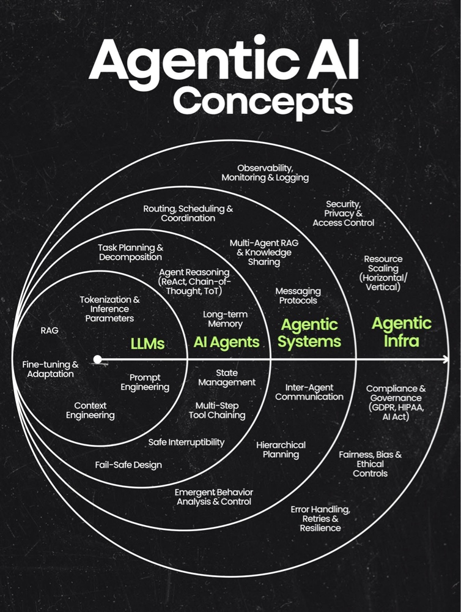

Guía estructurada desde los LLMs hasta la Infraestructura Agéntica
El núcleo cognitivo. Aquí reside la capacidad de procesamiento del lenguaje y el conocimiento base.
Este es el proceso fundamental de traducción. La tokenización convierte el texto humano en unidades numéricas que el modelo puede procesar. Los parámetros de inferencia controlan la aleatoriedad y creatividad de la respuesta. No es solo "leer", es cómo la máquina decide probabilísticamente cuál es la siguiente pieza de información.
Ajustar la "temperatura" a 0.2 para que un modelo redacte un contrato legal (precisión), frente a subirla a 0.9 para escribir un poema creativo (variedad).
Soluciona la limitación de conocimiento estático de los LLMs. El sistema busca datos frescos en una base de datos externa y se los entrega al modelo como contexto antes de generar respuesta. Reduce las alucinaciones y permite usar datos privados sin reentrenar.
Un chatbot que, antes de responderte, consulta el manual en PDF más reciente de tu lavadora y usa esa información exacta para decirte cómo limpiar el filtro.
Proceso de especialización. Se toma un modelo generalista y se entrena adicionalmente con datos de un dominio específico. Esto altera los pesos de la red neuronal para que el modelo adopte un estilo o conocimiento muy profundo sobre un tema concreto.
Un hospital entrena un modelo base exclusivamente con historiales clínicos anonimizados para crear un asistente que entiende jerga médica compleja.
El arte de diseñar instrucciones de entrada para guiar al modelo. Implica técnicas como few-shot prompting y estructuración lógica para manipular el espacio latente del modelo y obtener resultados de alta calidad sin tocar el código.
Usar un prompt estructurado: "Actúa como experto B2B, usa el marco AIDA, dirígete a CTOs y mantén un tono disruptivo".
Gestión óptima de la "ventana de contexto". Implica seleccionar, comprimir y priorizar qué información se da al modelo para que no olvide datos críticos en interacciones largas, dado su límite de memoria a corto plazo.
Un sistema resume automáticamente las decisiones tomadas en los primeros 30 minutos de una reunión y las reinyecta en el prompt actual para mantener la coherencia.
El individuo autónomo. Aquí el LLM gana la capacidad de actuar, recordar y razonar.
Metodologías para que el agente "piense" antes de actuar. Chain-of-Thought fuerza a explicar la lógica paso a paso. ReAct combina razonamiento con acciones. Tree of Thoughts explora múltiples posibilidades antes de decidir.
Ante una pregunta compleja, el agente: 1. Busca el dato A. 2. Busca el dato B. 3. Realiza la operación matemática entre ambos. Razona cada paso.
Permite recordar interacciones pasadas o hechos aprendidos hace tiempo mediante bases de datos vectoriales. Diferencia a un agente de un chat que se resetea; le da continuidad e identidad.
Un tutor de IA recuerda que la semana pasada fallaste en verbos irregulares y hoy empieza la lección proponiendo un repaso específico.
Capacidad de saber "dónde está" dentro de un proceso. Mantiene el seguimiento de variables y pasos completados. Evita bucles infinitos y permite retomar tareas si hay interrupciones.
Un agente de viajes sabe que el vuelo ya está reservado y que el estado actual es "pendiente de coche", respondiendo con precisión sobre lo que falta.
Habilidad de usar varias herramientas de software secuencialmente. El agente entiende que la salida de la Herramienta A es la entrada de la Herramienta B para resolver problemas complejos.
1. Usa SQL para sacar datos. 2. Usa Python para graficarlos. 3. Usa API de Gmail para enviar el gráfico.
Mecanismos que permiten detener a un agente en mitad de una tarea sin corromper datos. Vital para agentes autónomos que realizan acciones reales para evitar consecuencias graves.
Un humano pulsa "stop" mientras el agente compra acciones. El agente detiene las compras nuevas pero cierra limpiamente las pendientes.
La orquestación. Múltiples agentes colaborando para resolver problemas complejos.
Capacidad de tomar un objetivo enorme y romperlo en subtareas lógicas y ordenadas, entendiendo las dependencias entre ellas (no puedes pintar la pared si no la has construido).
"Organiza conferencia": 1. Agente búsqueda busca local. 2. Agente financiero calcula presupuesto. 3. Agente diseño hace invitaciones.
Varios agentes especializados acceden a diferentes bases de conocimiento pero comparten hallazgos clave, evitando silos de información y nutriendo un contexto compartido.
El agente de aerodinámica consulta física y comparte el resultado con el agente de diseño estético para ajustar el modelo 3D.
Estándar técnico (JSON, etc.) para que los agentes se envíen información estructurada. Asegura que el Agente A entienda exactamente lo que el Agente B envía.
Uso de cabeceras estandarizadas de "remitente", "intención" y "payload" para que agentes en distintos lenguajes se entiendan.
Dinámica de conversación entre agentes (negociación, corrección, votación). Permite la revisión por pares automática antes de entregar el resultado al humano.
Agente "Desarrollador" escribe código. Agente "Tester" encuentra error y lo comunica. Desarrollador arregla. Bucle autónomo.
Estructura con agentes "Jefes" (Managers) y "Trabajadores". El jefe supervisa y asigna recursos sin ejecutar tareas, esencial para escalar la complejidad.
Agente CEO asigna interfaz a Agente Diseño y base de datos a Agente Backend. Resuelve conflictos si surgen.
El tráfico aéreo del sistema. Decide qué agente es mejor para cada tarea, cuándo ejecutarla y cómo sincronizar resultados para optimizar recursos.
El sistema detecta una consulta técnica y la enruta al Agente de Soporte (no a Ventas), dándole prioridad alta.
Arquitectura que asume fallos. Detecta bucles o bloqueos y revierte a un estado seguro o pide ayuda humana. Evita que un error tumbe todo el sistema.
Si la reserva de vuelo falla 3 veces, el sistema para y alerta: "Se requiere acción manual", en lugar de seguir intentándolo infinitamente.
Monitoreo de dinámicas imprevistas creadas por la interacción de múltiples agentes. Detecta y controla comportamientos no programados para mantener la alineación.
Agentes económicos empiezan a especular inflando precios. El sistema detecta la burbuja y ajusta parámetros para estabilizar.
El soporte vital. La plataforma de ingeniería, seguridad y ética donde viven los agentes.
Herramientas para ver "dentro del cerebro" del sistema. Registra trazas completas de decisiones y costes para depurar errores y entender el comportamiento.
Un dashboard donde ves paso a paso cómo el agente viajó desde la pregunta hasta la respuesta, tiempos y costes.
Protege datos y define permisos (RBAC). Asegura que la información sensible no se filtre a usuarios no autorizados o modelos públicos.
El agente de código intenta leer nóminas. El sistema de control de acceso bloquea la petición por falta de permisos.
Infraestructura elástica para soportar miles de agentes. Gestiona GPUs y memoria, escalando horizontal o verticalmente según la demanda.
En Black Friday, el sistema multiplica instancias de agentes de 50 a 5000 automáticamente y luego reduce al bajar demanda.
Asegura cumplimiento legal (GDPR, AI Act). Incluye auditorías y límites geográficos de datos para evitar problemas legales corporativos.
Sistema que detecta solicitud de "derecho al olvido" y ordena borrar toda memoria relacionada con ese usuario.
Filtros que analizan salidas para detectar discriminación o sesgos antes de llegar al usuario, alineando la IA con valores humanos.
Un módulo ético escanea la selección de candidatos de RRHH para asegurar que no descarta perfiles por género o etnia.
Capacidad de absorber fallos técnicos. Incluye lógica de reintentos y cambio a proveedores de respaldo para garantizar continuidad.
Falla la API de clima. El sistema espera, reintenta. Falla de nuevo. Cambia automáticamente a un proveedor secundario.